Temoin (tout a 0)


moy 63.6 · σ 34.9
cb123799 / 16de2ece
Teinte rouge +100
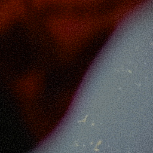
moy 63.8 · σ 34.7
650f79ab / 049b6b40
Teinte rouge -100
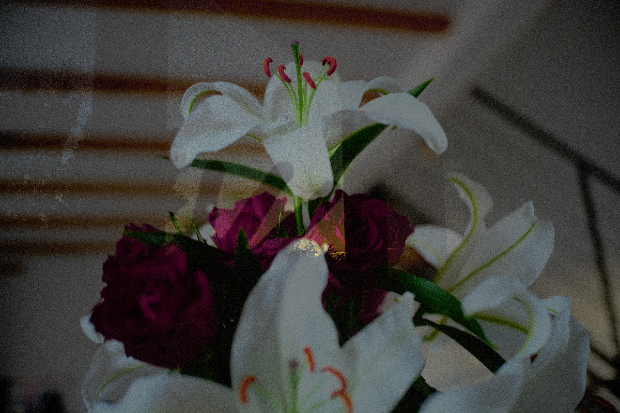
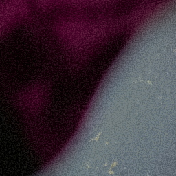
moy 63.6 · σ 34.8
a36a348a / 5e78a9f9
Teinte bleu +100
moy 63.6 · σ 34.9
416e890a / 0ad10f9c
Teinte bleu -100
moy 63.6 · σ 34.9
01ee64ec / 4a7acbc9
Saturation orange +100 (peau)
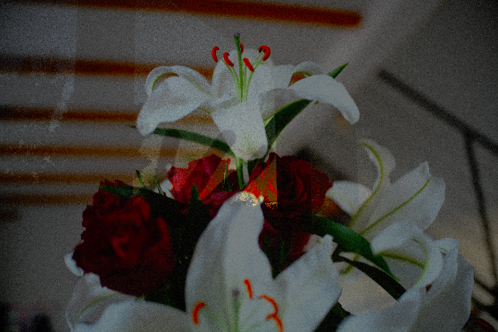
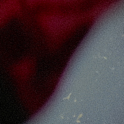
moy 63.2 · σ 35.2
262a525a / e84dc9e0
Saturation bleu -100
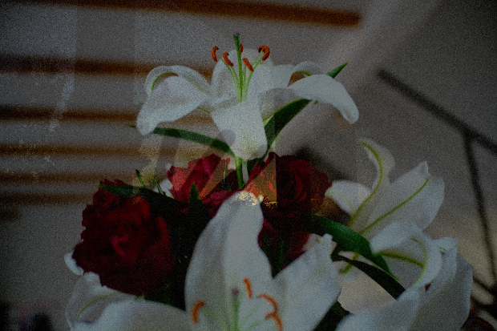
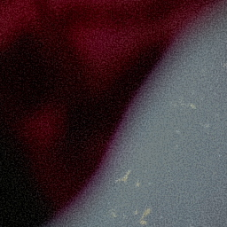
moy 63.6 · σ 34.9
d8b387b2 / 062bc216
Luminance vert +100
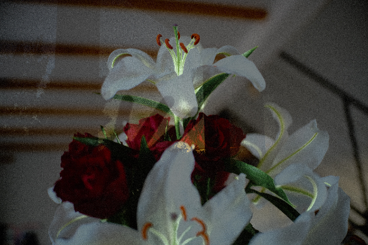
moy 65.9 · σ 36.8
a6b6c702 / a0141993
Luminance vert -100
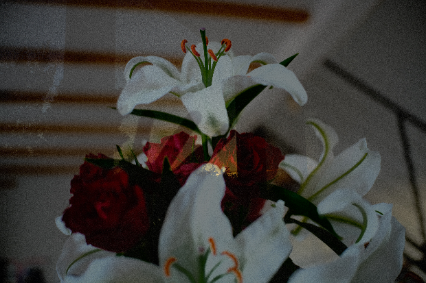
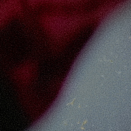
moy 61.6 · σ 34.7
da54e4b6 / 442d8b1f
Noir et blanc (neutre)
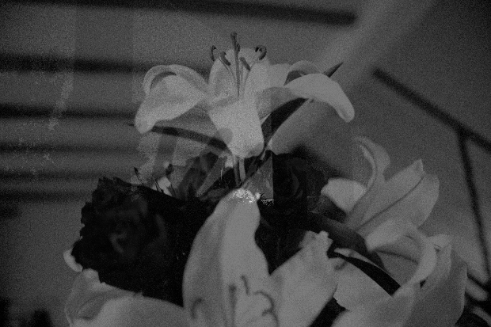
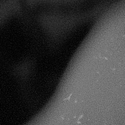
moy 64.2 · σ 34.2
1f1edf23 / 6c2aa45a
N&B : rouge +100 / bleu -100
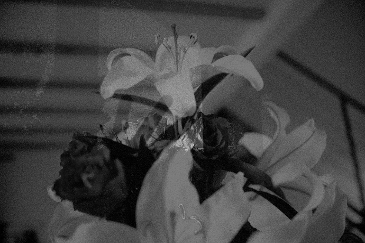
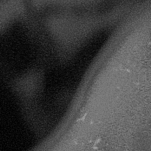
moy 66.0 · σ 32.4
76ebc96f / 7870a53d
N&B : orange +80
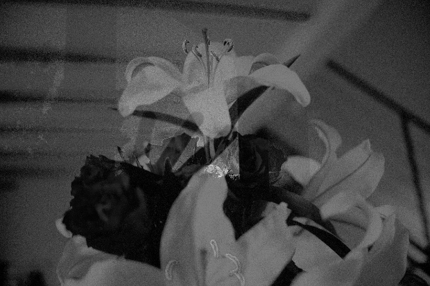
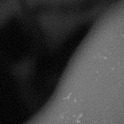
moy 66.7 · σ 33.5
79f457e6 / 713ee7fa